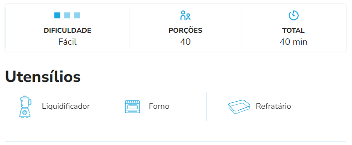
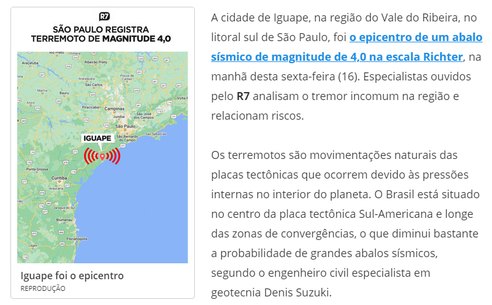

Receita fácil e rápida.
Bolo de Fubá Cremoso.

Ingredientes
4 xícaras (chá) de Leite Líquido NINHO® Forti+ Integral
4 ovos
2 xícaras (chá) de açúcar
2 colheres (sopa) de manteiga
1 xícara (chá) de queijo parmesão ralado
1 e meia xícara (chá) de fubá
2 colheres (sopa) de farinha de trigo
1 colher (sopa) de fermento em pó
Modo de Preparo
Em um liquidificador, bata o Leite NINHO, os ovos, o açúcar, a manteiga e o queijo parmesão ralado.
Acrescente o fubá, a farinha de trigo e o fermento em pó e bata até ficar homogêneo.
Coloque em forma retangular (20 cm x 30 cm) untada com manteiga e polvilhada com fubá e leve ao forno médio (180°C), preaquecido, por cerca de 30 minutos.
Link de referência da receita.
Tabela itens de T.I
Mês de Junho.
Produtos
Preço Unitário
Quantidade em estoque
HD SATA 80 GB
R$ 85,00
35
Pen Drive 2 GB
R$ 15,00
150
Impressora Laser
R$ 613,99
18
Monitor LCD 17'
R$ 309,00
41
Terremoto no Brasil? Especialistas explicam tremor em São Paulo
Abalo sísmico com epicentro em Iguape
Clique aqui para mais informações sobre o caso.